Expression of type ExprTuple¶
from the theory of proveit.physics.quantum.QPE¶
In [1]:
import proveit
# Automation is not needed when building an expression:
proveit.defaults.automation = False # This will speed things up.
proveit.defaults.inline_pngs = False # Makes files smaller.
%load_expr # Load the stored expression as 'stored_expr'
# import Expression classes needed to build the expression
from proveit import ExprTuple, e
from proveit.numbers import Exp, Mult, Neg, four, frac, one, two
In [2]:
# build up the expression from sub-expressions
expr = ExprTuple(Mult(one, Exp(Mult(four, Exp(e, two)), Neg(one))), Mult(one, Mult(frac(one, four), Exp(e, Neg(two)))))
In [3]:
# check that the built expression is the same as the stored expression
assert expr == stored_expr
assert expr._style_id == stored_expr._style_id
print("Passed sanity check: expr matches stored_expr")
In [4]:
# Show the LaTeX representation of the expression for convenience if you need it.
print(stored_expr.latex())
In [5]:
stored_expr.style_options()
In [6]:
# display the expression information
stored_expr.expr_info()
| core type | sub-expressions | expression | |
|---|---|---|---|
| 0 | ExprTuple | 1, 2 | |
| 1 | Operation | operator: 13 operands: 3 | 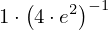 |
| 2 | Operation | operator: 13 operands: 4 | 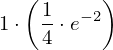 |
| 3 | ExprTuple | 20, 5 | 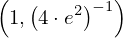 |
| 4 | ExprTuple | 20, 6 | 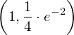 |
| 5 | Operation | operator: 23 operands: 7 | 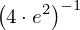 |
| 6 | Operation | operator: 13 operands: 8 | 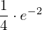 |
| 7 | ExprTuple | 9, 10 | 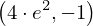 |
| 8 | ExprTuple | 11, 12 | 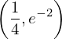 |
| 9 | Operation | operator: 13 operands: 14 | 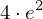 |
| 10 | Operation | operator: 25 operand: 20 |  |
| 11 | Operation | operator: 16 operands: 17 |  |
| 12 | Operation | operator: 23 operands: 18 | 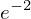 |
| 13 | Literal |  | |
| 14 | ExprTuple | 21, 19 | 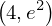 |
| 15 | ExprTuple | 20 |  |
| 16 | Literal |  | |
| 17 | ExprTuple | 20, 21 |  |
| 18 | ExprTuple | 27, 22 | 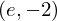 |
| 19 | Operation | operator: 23 operands: 24 |  |
| 20 | Literal |  | |
| 21 | Literal |  | |
| 22 | Operation | operator: 25 operand: 28 |  |
| 23 | Literal |  | |
| 24 | ExprTuple | 27, 28 | 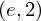 |
| 25 | Literal |  | |
| 26 | ExprTuple | 28 |  |
| 27 | Variable |  | |
| 28 | Literal |  |